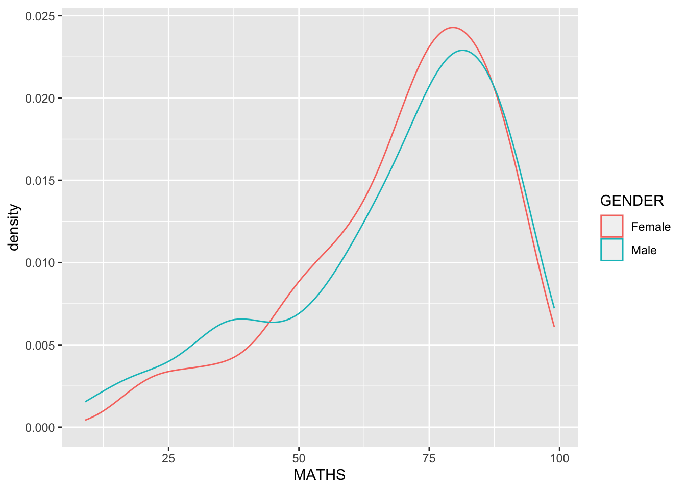
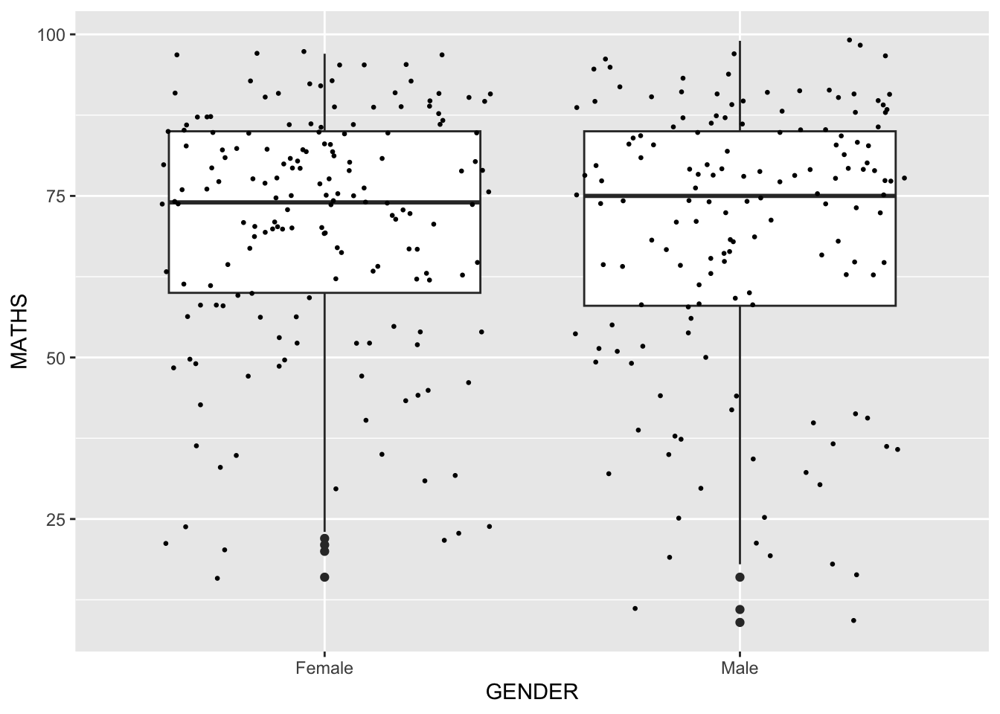
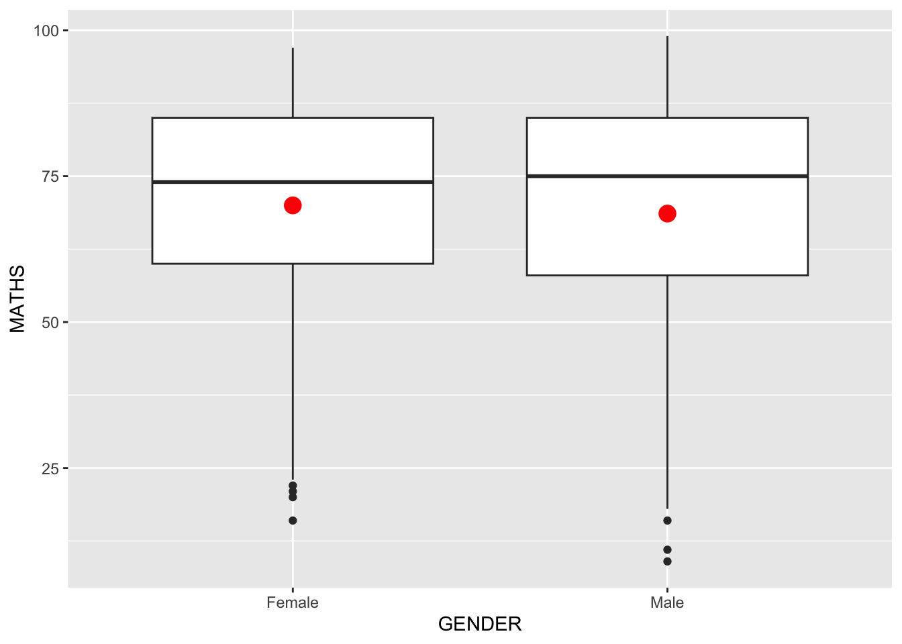

pacman::p_load(tidyverse)Hands-on Exercise 1: A Layered Grammar of Graphics: ggplot2 methods
Overview
This hands-on exercise covers Chapter 1: A Layered Grammar of Graphics: ggplot2 methods.
I learned about the following:
Useful functions and components in
ggplot2.Grammar of Graphics to guide how data is visualized
Getting Started
Loading the required libraries
Loading the data
We first need to download the provided data set from eLearn and put it under the data folder.
File structure
Next, read the data by using read_csv() from readr package.
exam_data <- read_csv("data/Exam_data.csv")
glimpse(exam_data)Rows: 322
Columns: 7
$ ID <chr> "Student321", "Student305", "Student289", "Student227", "Stude…
$ CLASS <chr> "3I", "3I", "3H", "3F", "3I", "3I", "3I", "3I", "3I", "3H", "3…
$ GENDER <chr> "Male", "Female", "Male", "Male", "Male", "Female", "Male", "M…
$ RACE <chr> "Malay", "Malay", "Chinese", "Chinese", "Malay", "Malay", "Chi…
$ ENGLISH <dbl> 21, 24, 26, 27, 27, 31, 31, 31, 33, 34, 34, 36, 36, 36, 37, 38…
$ MATHS <dbl> 9, 22, 16, 77, 11, 16, 21, 18, 19, 49, 39, 35, 23, 36, 49, 30,…
$ SCIENCE <dbl> 15, 16, 16, 31, 25, 16, 25, 27, 15, 37, 42, 22, 32, 36, 35, 45…R Graphics VS ggplot
First we will compare the basic R Graphics functions and ggplot.
hist(exam_data$MATHS)
ggplot(data=exam_data, aes(x = MATHS)) +
geom_histogram(bins=10,
boundary = 100,
color="black",
fill="grey") +
ggtitle("Distribution of Maths scores")
Reflections
R Graphics looks very each to use to generate a histogram. ggplot2 requires more code to generate a simple histogram.
However, ggplot2 may offer more features to customize the plot and is not limited to just histograms.
Grammar of Graphics
Building blocks for the layers of Grammar of Graphics
Data: The dataset being plotted.
Aesthetics take attributes of the data and use them to influence visual characteristics, such as position, colours, size, shape, or transparency.
Geometrics: The visual elements used for our data, such as point, bar or line.
Facets split the data into subsets to create multiple variations of the same graph (paneling, multiple plots).
Statistics, statiscal transformations that summarise data (e.g. mean, confidence intervals).
Coordinate systems define the plane on which data are mapped on the graphic.
Themes modify all non-data components of a plot, such as main title, sub-title, y-aixs title, or legend background.
Grammatical Elements Using ggplot2
Data
The data layer contains the dataset to be visualized.
ggplot(data=exam_data)
This generated an empty plot as no visual elements have been added to ggplot2 call.
Aesthetic Mappings
The aesthetic mappings take attributes of the data and and use them to influence visual characteristics, such as position, colour, size, shape, or transparency. Each visual characteristic can thus encode an aspect of the data and be used to convey information.
All aesthetics of a plot are specified in the aes() function call.
ggplot(data=exam_data,
aes(x= MATHS))
This maps the MATHS column of exam_data to the x-axis of the plot. The axis range is based on the range of this dataset.
min(exam_data["MATHS"])[1] 9max(exam_data["MATHS"])[1] 99Geometrics
Types
Geometric objects are the actual marks we put on a plot. Examples include:
geom_point for drawing individual points (e.g., a scatter plot)
geom_line for drawing lines (e.g., for a line charts)
geom_smooth for drawing smoothed lines (e.g., for simple trends or approximations)
geom_bar for drawing bars (e.g., for bar charts)
geom_histogram for drawing binned values (e.g. a histogram)
geom_polygon for drawing arbitrary shapes
geom_map for drawing polygons in the shape of a map! (You can access the data to use for these maps by using the map_data() function).
A plot can have multiple geometrics. Other available geometrics can be found in https://ggplot2.tidyverse.org/reference/#section-layer-geoms.
geom_bar()
geom_bar() plots a bar chart.
ggplot(data=exam_data,
aes(x=RACE)) +
geom_bar()
geom_dotplot()
geom_dotplot() is appropriate for binned data.
ggplot(data=exam_data,
aes(x = MATHS)) +
geom_dotplot(dotsize = 0.5)
Vertical scale is misleading so let’s just remove it.
Note
scale_y_continuous()is used to turn off the y-axis, andbinwidth argument is used to change the binwidth to 2.5.
ggplot(data=exam_data,
aes(x = MATHS)) +
geom_dotplot(binwidth=2.5,
dotsize = 0.5) +
scale_y_continuous(NULL,
breaks = NULL) 
geom_histogram()
geom_histogram() is for generating a histogram. (default bin = 30)
ggplot(data=exam_data,
aes(x = MATHS)) +
geom_histogram()
Let’s change the histogram bin and color.
ggplot(data=exam_data,
aes(x= MATHS)) +
geom_histogram(bins=20,
color="black",
fill="light blue") 
Changing geometry by using aes()
In this example, we partition the data (e.g. Female vs Male) and color each bar corresponding to the partition differently.
ggplot(data=exam_data,
aes(x= MATHS,
fill = GENDER)) +
geom_histogram(bins=20,
color="grey30")
geom_density()
geom-density() computes and plots kernel density estimate, which is a smoothed version of the histogram.
This is appropriate for continuous data.
ggplot(data=exam_data,
aes(x = MATHS)) +
geom_density() 
It can be used with partitioned data as well.
ggplot(data=exam_data,
aes(x = MATHS,
colour = GENDER)) +
geom_density()
geom_boxplot()
geom_boxplot() displays continuous value list. It visualises five summary statistics (the median, two hinges and two whiskers), and all “outlying” points individually.
It is appropriate for visualizing the distribution of a dataset.
ggplot(data=exam_data,
aes(y = MATHS,
x= GENDER)) +
geom_boxplot() 
Notches are used in box plots to help visually assess whether the medians of distributions differ. If the notches do not overlap, this is evidence that the medians are different.
Notches can be used by supplying notches=true.
ggplot(data=exam_data,
aes(y = MATHS,
x= GENDER)) +
geom_boxplot(notch=TRUE)
geom_violin()
geom_violin is designed for creating violin plot. Violin plots are a way of comparing multiple data distributions. With ordinary density curves, it is difficult to compare more than just a few distributions because the lines visually interfere with each other. With a violin plot, it’s easier to compare several distributions since they’re placed side by side.
ggplot(data=exam_data,
aes(y = MATHS,
x= GENDER)) +
geom_violin()
geom_point()
geom_point() is especially useful for creating scatterplot.
The plot below shows the plot of Maths and English grades.
ggplot(data=exam_data,
aes(x= MATHS,
y=ENGLISH)) +
geom_point() 
Combining geom objects
Multiple geom objects can be combined in a single plot like below, combining a boxplot and scatterplot.
ggplot(data=exam_data,
aes(y = MATHS,
x= GENDER)) +
geom_boxplot() +
geom_point(position="jitter",
size = 0.5)
Statistics
The Statistics functions statistically transform data, usually as some form of summary. For example:
frequency of values of a variable (bar graph)
a mean
a confidence limit
There are two ways to use these functions:
add a
stat_()function and override the default geom, oradd a
geom_()function and override the default stat.
Adding mean to the boxplot
The boxplot show summary of the dataset based on quantiles. Hence, we can see the median but not the mean.
ggplot(data=exam_data,
aes(y = MATHS, x= GENDER)) +
geom_boxplot()
We can add the mean by using the stat_summary() function.
ggplot(data=exam_data,
aes(y = MATHS, x= GENDER)) +
geom_boxplot() +
stat_summary(geom = "point",
fun="mean",
colour ="red",
size=4) 
This adds a red dot corresponding to the mean to the boxplot.
Generating the stat using the geom_() functions
Alternatively, the result above can also be generated by using geom_point() with stat parameter.
ggplot(data=exam_data,
aes(y = MATHS, x= GENDER)) +
geom_boxplot() +
geom_point(stat="summary",
fun="mean",
colour ="red",
size=4) 
Important
Using fun.y generated the warning below:
Warning: The `fun.y` argument of `stat_summary()` is deprecated as of ggplot2 3.3.0.
Please use the `fun` argument instead.Hence, I replace fun.y with just fun.
Generating best fit curve
Best fit curve can be generated by using geom_smooth(). We can add this to the English vs Maths scatterplot previously generated.
ggplot(data=exam_data,
aes(x= MATHS, y=ENGLISH)) +
geom_point() +
geom_smooth(linewidth=0.5, color="red")We can also generate a best fit line by specifying method=lm instead of the default loess.
ggplot(data=exam_data,
aes(x= MATHS, y=ENGLISH)) +
geom_point() +
geom_smooth(method="lm", linewidth=0.5, color="red")Facets
Facetting generates small multiples (sometimes also called trellis plot), each displaying a different subset of the data. They are an alternative to aesthetics for displaying additional discrete variables. ggplot2 supports two types of factes, namely: facet_grid() and facet_wrap.
facet_wrap()
facet_wrap wraps a 1d sequence of panels into 2d. This is generally a better use of screen space than facet_grid because most displays are roughly rectangular.
The code chunk below generates multiple histograms for Maths grades for each class.
ggplot(data=exam_data,
aes(x= MATHS)) +
geom_histogram(bins=20) +
facet_wrap(~ CLASS)
facet_grid()
facet_grid() forms a matrix of panels defined by row and column facetting variables. It is most useful when you have two discrete variables, and all combinations of the variables exist in the data.
The code chunk below visualizes the same data above but using facet_grid().
ggplot(data=exam_data,
aes(x= MATHS)) +
geom_histogram(bins=20) +
facet_grid(~ CLASS)
Coordinates
The Coordinates functions map the position of objects onto the plane of the plot. There are a number of different possible coordinate systems to use, they are:
coord_cartesian(): the default cartesian coordinate systems, where you specify x and y values (e.g. allows you to zoom in or out).coord_flip(): a cartesian system with the x and y flipped.coord_fixed(): a cartesian system with a “fixed” aspect ratio (e.g. 1.78 for a “widescreen” plot).coord_quickmap():
Flipping coordinates
By the default, the bar chart of ggplot2 is in vertical form.
ggplot(data=exam_data,
aes(x=RACE)) +
geom_bar()
We can transform the vertical to horizontal bars by using coord_flip().
ggplot(data=exam_data,
aes(x=RACE)) +
geom_bar() +
coord_flip()
Changing axis range
The scatterplot below may be misleading as the axis range are different.
ggplot(data=exam_data,
aes(x= MATHS, y=ENGLISH)) +
geom_point() +
geom_smooth(method=lm, linewidth=0.5)
This is because by default, the axis range was generated based on the min and max values in the dataset.
We can apply context and set axis ranges based on the real life min and max values (0 and 100, respectively).
ggplot(data=exam_data,
aes(x= MATHS, y=ENGLISH)) +
geom_point() +
geom_smooth(method=lm,
linewidth=0.5) +
coord_cartesian(xlim=c(0,100),
ylim=c(0,100))
Themes
Themes control elements of the graph not related to the data. For example:
background colour
size of fonts
gridlines
colour of labels
Built-in themes include: - theme_gray() (default) - theme_bw() - theme_classic()
A list of theme can be found at this link. Each theme element can be conceived of as either a line (e.g. x-axis), a rectangle (e.g. graph background), or text (e.g. axis title).
Applying the built-in themes is as simple as applying the theme_* functions.
ggplot(data=exam_data,
aes(x=RACE)) +
geom_bar() +
coord_flip() +
theme_linedraw()Reflections
During ISSS624, although I was using ggplot2, I didn’t really understand the principles behind why it must be used in layers. The Grammar of Graphics is the answer to this and provides a framework to generate structured visualizations.
ggplot2 is indeed useful and multiple elements can be combined in a single plot. However, it is also important to consider how much information is presented by the plot. Too much information can also be confusing and misleading so it is more important to define the purpose of the plot to ensure that the elements contribute to the message.
Sometimes less is more so just because ggplot2 can accommodate multiple elements doesn’t mean we have to.